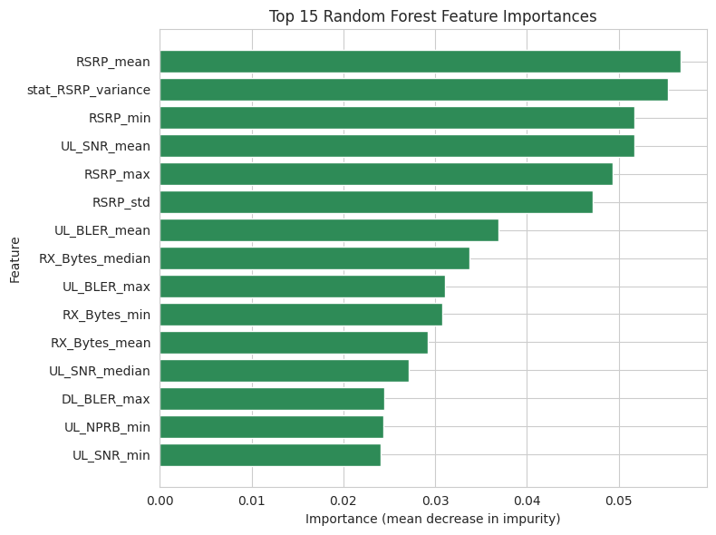

Network Service Availability Prediction
Machine learning framework for retrospective anomaly classification on 32,000 multi-dimensional telecom radio access network KPI time series.
What I built: Feature extraction pipeline engineering 110 physical-layer KPI statistics (RSRP, UL_SNR, UL_BLER) and class-weighted Random Forest model.
Result: F1 = 0.9577, Precision = 1.0000, False Alarm Rate = 0.0000, Recall = 0.9189 on 32,000 trace windows (File: readme.md)
- Python
- scikit-learn
- Pandas
- NumPy
- Matplotlib
- Seaborn